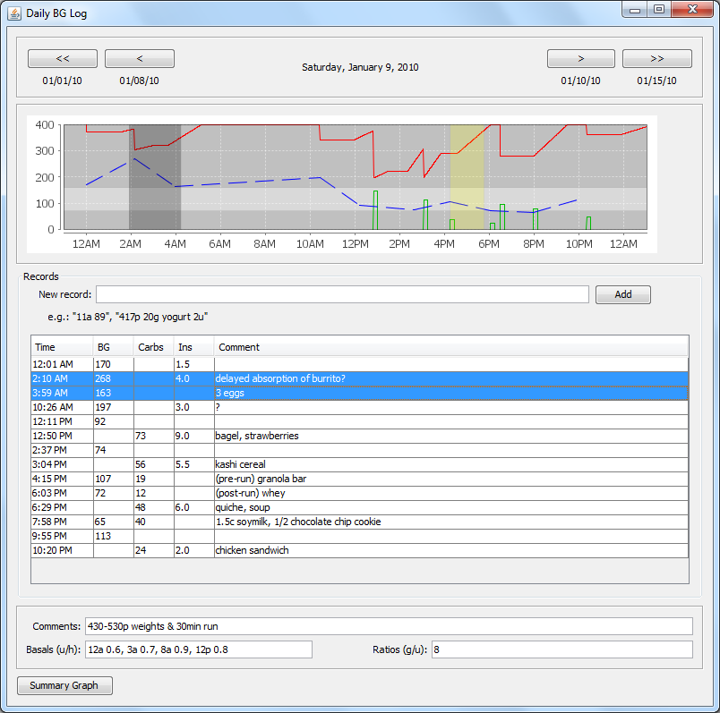
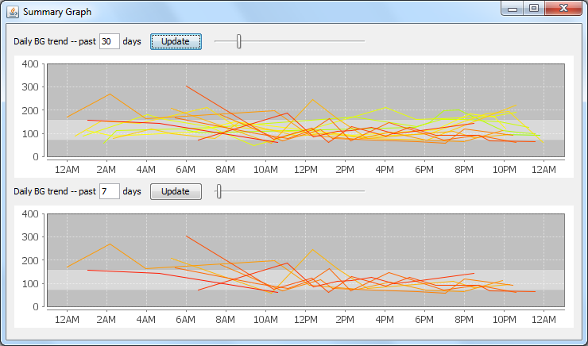

BGInput
In 2008, I wrote a Java app to record and graph my blood glucose against the effect of insulin and carbs:

- The top graph includes BG, insulin (including an idealized four-hour action curve with 90 minute peak), and carbs.
- The hours 2:10-3:59 am are highlighted in dark grey on the graph because the user has highlighted those data rows in the table.
- The hours 4:30-5:30 pm are highlighted in yellow on the graph because the "Comments" field includes an activity during that time span.
- The record input field supports multiple input formats/shorthands to make data entry as fast as possible.

- The Summary Graph shows two time periods (e.g. "have the last two weeks been better or worse than the last 60 days?"), with a color spectrum indicating the age of the line.